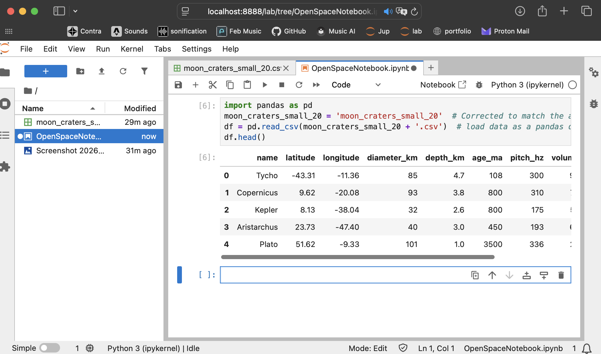

Title
Case 1: Music AI
Subtitle
Sonified Compliance Guide
Date
Dec 2025 - Ongoing
Guiding question
How can a creator intuitively get a grasp of AI compliance and integrate it in their workflow?
Tools
GitHub, GitPages, Obsidian, AI (Grok, Claude), Apple Pages, Terminal (HTML, CSS, JS), Python, Audacity
Collaborators, Context
Independent Open-Source project
Process



Explanation / Prompt / Learning
AI use vs. manual labour and original work
- General interest in Audio, Creativity, impact of AI and restrictions as manageable by me
- Idea generation by AI & Design, expansion to interactive and accessible system by me
- Gather various AI requirements, review accuracy with several AI's
- Review of Accessibility Guidelines with several AI's as well as several checks
- Design manually in Apple Pages to upload image for code prompt by AI
- Troubleshooting, Adjusting and refining in hybrid
Impacts, Results, Follow up
Shared publically with regular version control.
The most interesting things happen when something new enters space.